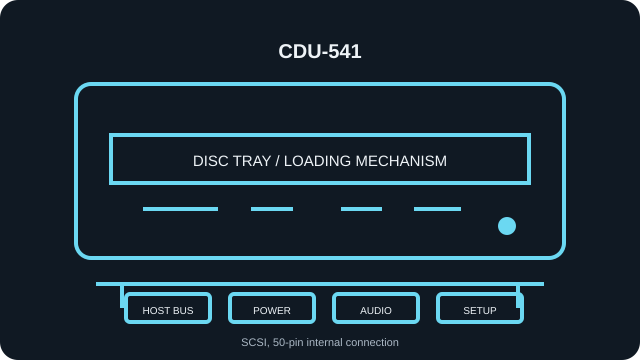

[ INDIVIDUAL COMPONENT // OPTICAL DRIVES ]
Sony CDU-541
Read-only internal CD-ROM reader. Specifications below identify the exact model; nearby family variants may use a different interface, mechanism, firmware, or jumper layout.

IDENTIFICATION: Sony CDU-541 · verify the full label, suffix and revision against the cited manual before assigning interface, disc-format, firmware or installation characteristics.
Verified specifications
| Catalog subcategory | CD-ROM readers |
|---|---|
| Exact product identifier | Sony CDU-541 |
| Read speed | 1× (single-speed) CD-ROM read; maximum rating is not a guarantee for a particular disc or transfer path. |
| Supported CD formats | CD-ROM data (Yellow Book) and CD-DA audio; do not assume later XA, Photo CD, CD-R, or CD-RW support from the product family name. |
| Host interface | SCSI, 50-pin internal connection |
| Host and mechanical compatibility | Internal half-height 5.25-inch SCSI mechanism; caddy-loading, not slimline. Requires a compatible SCSI host adapter and software. Do not connect to ATA/SATA directly. |
| Firmware / jumper caveat | Set SCSI target ID and termination using the exact CDU-541 manual’s rear-panel/switch diagram and the controller’s bus plan. This generation may use a caddy; confirm that the supplied caddy and mechanism revision match. Confirm CDU-541 variant/revision and firmware identity before service; firmware for CDU-541-25 or later Sony mechanisms is not interchangeable without explicit Sony documentation. |
Installation and preservation notes
- Before connection, compare the unit label, interface connector and jumper markings with the model-specific manual. Do not power an uncertain pinout.
- For this SCSI unit, avoid target-ID conflicts and apply bus termination only at the physical chain endpoints.
- Keep the original firmware identity, host adapter/BIOS, driver version, disc type, read-error log and verified image checksum together during preservation work.
- Use this record for read compatibility only: a CD-ROM reader is not evidence of disc-writing support.
Manufacturer, archive and manual sources
- Sony — CDU-541 SCSI Interface Manual (Internet Archive/Bitsavers scan)Original Sony interface manual scan for the exact CDU-541 line.
- Sony — CDU-541 Interface Manual (manual scan)Second accessible scan of model-specific documentation.
- Bitsavers — Sony CD-ROM manual archive indexArchive index for original Sony optical-drive manuals.
Sources are model manuals, manufacturer archives or technical archives. A related-family manual is identified as such; verify the exact drive label/revision before applying its jumper or firmware instructions.